Ce dossier présente le volet blockchain seul, avec ses propres onglets. Il peut être montré sans aucun autre document.
Rien n'est ouvert, en vente ou déployé. Les éléments pas encore créés sont marqués « à venir ».
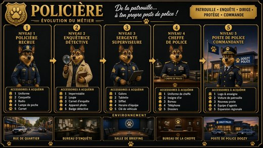
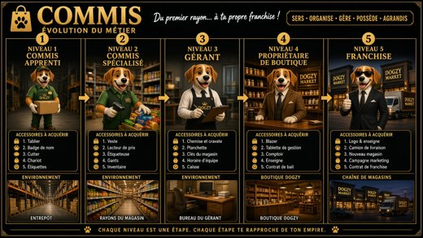
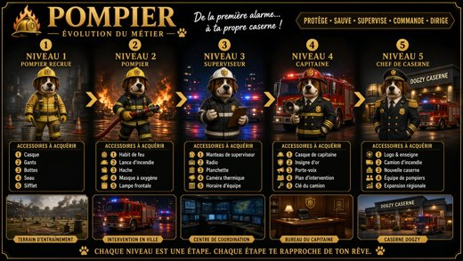
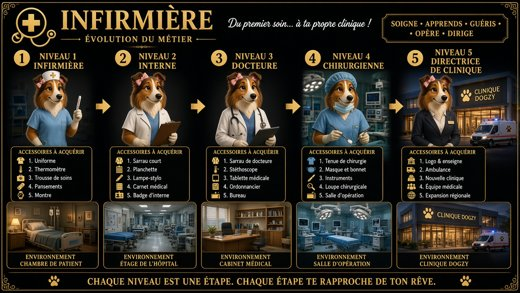
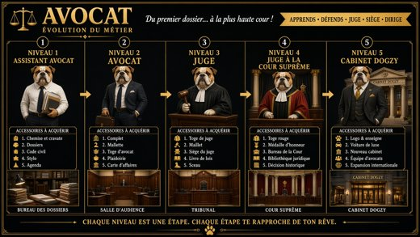
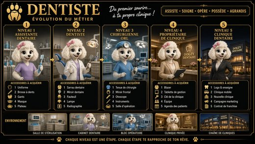
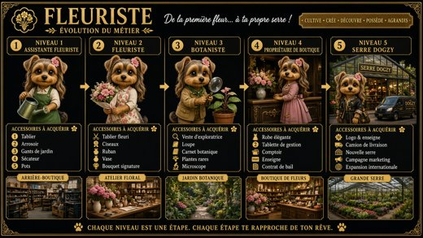
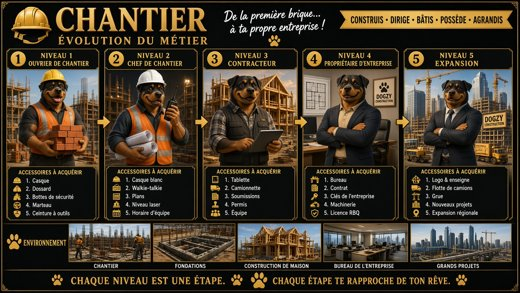
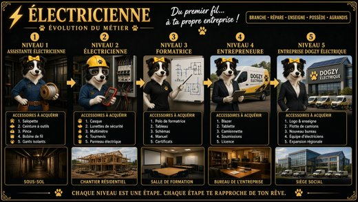
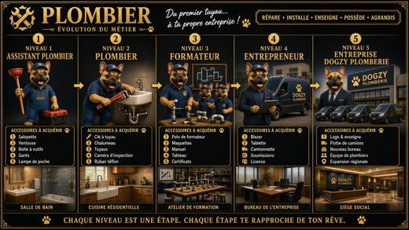
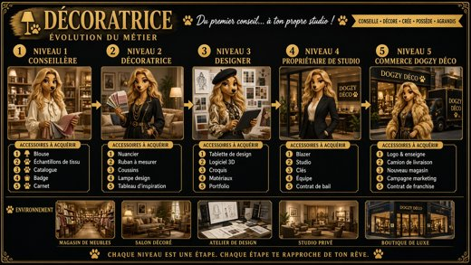
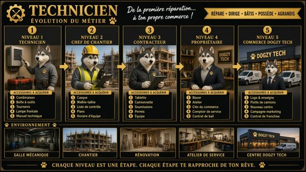
Valkyrie compte 40 fiches métiers (27 plus 13). Chaque fiche montre l'évolution totale du personnage, ses cinq niveaux. Chaque fiche est une option d'acquisition pour le jeu Dogzy Family Universe.
25 affiches existent déjà en local : 01 à 23 en français, plus Teacher et Sound Tech (en anglais seulement).
Les autres ne sont pas encore dessinées. Cuisinier, Serveuse et Barmaid n'ont pas encore d'affiche.
Aucun nom manquant n'est inventé et aucun nouveau personnage n'est dessiné.
La frappe, une évolution à la fois, viendra plus tard avec le jeu. Elle n'est pas offerte.
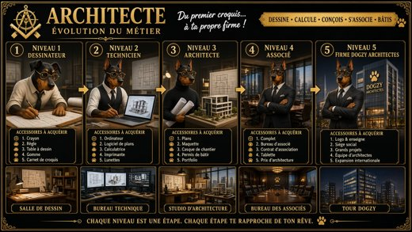
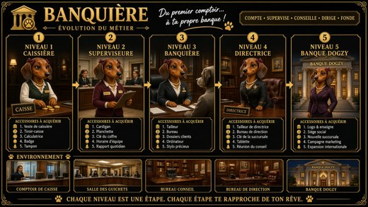
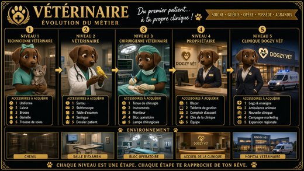
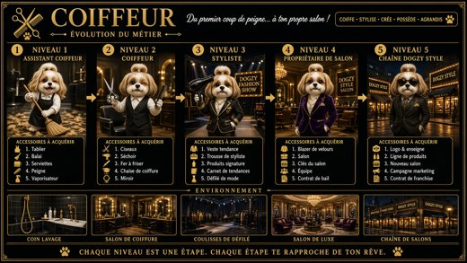
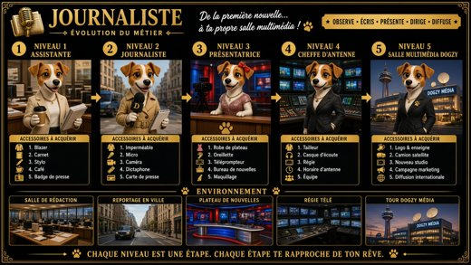
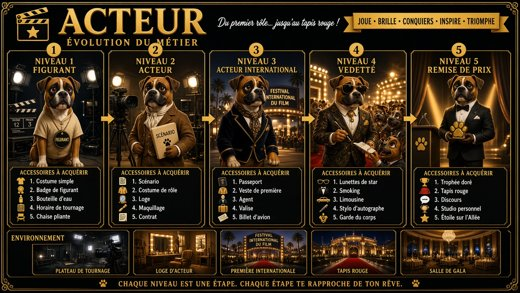
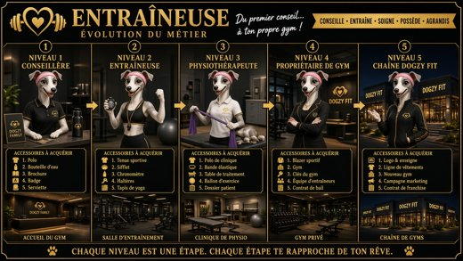
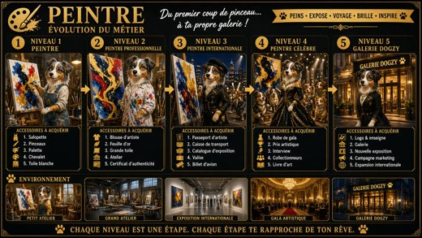
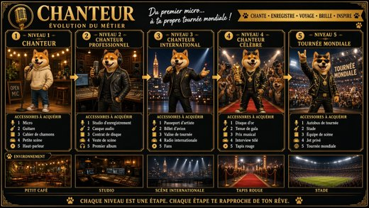
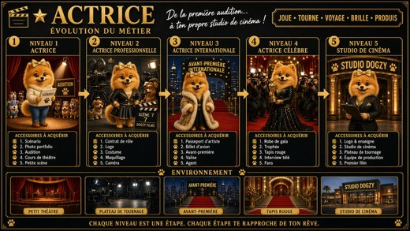
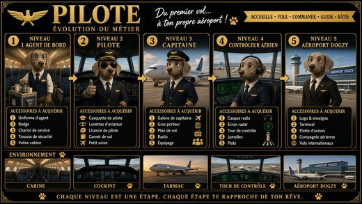
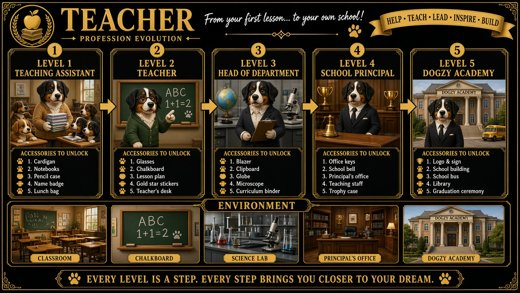
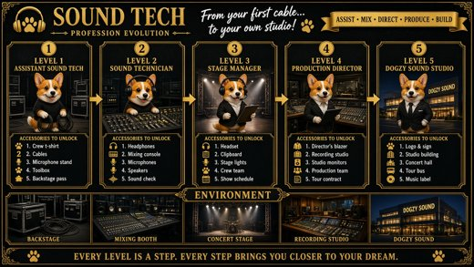
Les accessoires qui accompagnent les personnages métiers. La liste reste à venir ; aucun accessoire n'est inventé ici.
Les commerces de la ville. Sur les affiches déjà faites, le dernier niveau de chaque métier mène à un commerce. La liste complète reste à venir.
Cet onglet remplace « expansions ». Il comprend le bateau de croisière, la marina et l'aéroport. Les détails sont à venir ; aucune liste n'est inventée.
L'onglet du maire. Le maire n'a pas encore de nom et aucun nom n'est inventé. Le contenu est à venir.
Des toiles prévues en NFT, que les gens pourront acheter. La vente n'est pas ouverte. La galerie déjà montée par Valkyrie reste comme elle est ; aucun titre de toile n'est inventé ici.
Pour faire un échange en crypto Dogzy, le joueur clique sur la banque. Son portefeuille est dedans. La banque-échange n'est pas ouverte. Aucune adresse ni phrase secrète n'est donnée.
Le pitch Dogzy Family Universe appartient à ce dossier. Le fichier existant est gardé à part et n'est pas recopié ici.
Les tokenomics Dogzy Family Universe appartiennent à ce dossier. Rien n'est déployé ni audité. Aucun chiffre n'est repris ici.
Ce dossier se présente seul. L'autre univers, Dogzie Town (volet 1, le jeu console), a son propre dossier.
Valkyrie